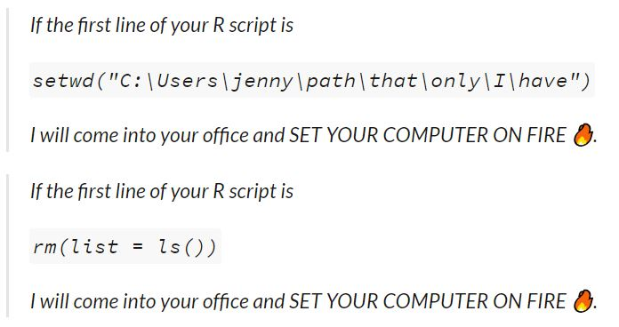

my_data <- c(1, 10, 12, 5)
as.character(round(mean(my_data), 2)) # base R
# tidyverse
my_data %>%
mean() %>%
round(2) %>%
as.character()0.2 R - Further Reading
Additional Information
Oh, you’re still here. You must be really hyped for the workshop!
This page is dedicated to some (maybe more niche) topics that might be interesting within the broader context of this workshop. However, they are neither crucial, nor is everyone interested in reading pages upon pages about R. If you are, though, go ahead! Some of this content will make more sense after the introductory part of the workshop (or if you have pre-existing R knowledge).
Base R vs. tidyverse
In this course, we will mainly use the tidyverse, and sometimes, we will refer to base R. But what is the difference, and does it matter?
The term base R can be a little bit ambiguous. In this course, we refer to base R as “R without any packages installed”, i.e., what you get after a new installation of R. When you hear someone say, “base R vs. tidyverse”, the term “base R” may also refer to a programming style in the broader sense. Because usually, this debate is not about people using the tidyverse vs. no packages at all, but rather about people using the tidyverse coding style vs. the coding style that is used in base R, and usually for other packages outside of the tidyverse. This is all a bit abstract, but it will make more sense at the end.
Another important thing to know is that the tidyverse is actually not a package (well, technically, it is, but that’s not the point), but a collection of packages. For example, the packages ggplot2 (the famous package for plotting) or dplyr (famous for data wrangling) are both part of the tidyverse among many others! What these packages have in common is a certain way of coding. Most notably, the tidyverse works with “pipes” (%>%) that allow you to chain function calls one after the other (top to bottom, or left to right), instead of the “onion style” (inside to outside) in base R. See:
Central to the tidyverse is also “tidy evaluation”, a special form of so-called “non-standard evaluation”. A popular example is “data masking”: In base R, you always have to call the data source explicitly if you access a column of e.g. a data.frame. Within the tidyverse, you provide the data source once, and can then access the columns without having to name the data again. See:
# base R
iris$new_col <- iris$Sepal.Length + iris$Petal.Length
# tidyverse
iris %>%
mutate(new_col = Sepal.Length + Petal.Length)We won’t go into further details here, but all packages within the tidyverse adhere to the “tidy philosophy”. Importantly, fierce debates have been fought over “base R” vs. tidyverse - meaning “tidy style” vs. “base R style” rather than “tidyverse vs. no packages at all”. People particularly disagree on the question what you should teach beginners. Very briefly, some people think that the tidyverse is easier to read and understand, especially for beginners. Others argue that only knowing how to code “tidy style” will make you dependent on certain packages, and less capable of navigating “pure” R. Sometimes, it might seem whether people are coding in two different languages, not simply R.
While most of the examples in this code follow the tidyverse, it’s important to note that it’s not necessarily either/or. You can use functionalities of the tidyverse, and other wise stick to a more “base R style”. Or you can switch your approach depending on the task you need to do. Despite occasional debates like these, the R community is generally speaking very friendly and inclusive.
PS: Sometimes, you will see scripts where people loaded both the tidyverse, and packages included in the tidyverse, e.g. ggplot2, dplyr etc. This is not necessary, because those packages are already loaded as part of the tidyverse. Sometimes, it might make more sense to load individual packages if you only need a couple of functions. But within the tidyverse, it’s also fairly common to just load the whole bunch using library(tidyverse). Loading packages of the tidyverse after already loading the tidyverse will not break anything, but it clutters your code unnecessarily.
Project-oriented workflows
In this workshop, we encouraged you to work with R projects, which a) help you to organize files of code that belong together, b) offer you some convenience functions (i.e., RStudio will remember which scripts you had opened last and will open these automatically for you if you open your project again) and most importantly c) enhance the reproducibility of your code. Here are some additional information why projects are more reproducible, and how you (or someone else using your code) might run into trouble if you don’t use them. Most of my arguments are paraphrased from Jenny Bryan’s 2017 post about a project-oriented workflow. Note that Jenny may come and set your computer on fire of you don’t heed my (her) advice, so pay close attention :-)

Absolute and relative paths
Let’s start with the general issue we have (and the first point addressed in Jenny’s “fiery” tweet). If you run code (or at least when you want to read in files, e.g. data files), R will need to know “where you are” on your computer. For example, if I want to open my file “my_data.csv”, I’d need to let R know where said file can be found at (e.g. C:/Users/juliane.nagel/Documents/code/r_workshop/my_data.csv). So, I could read in my data like this: data <- read.csv("C:/Users/juliane.nagel/Documents/code/r_workshop/my_data.csv"). However, it is quite tedious to spell out very long file paths for every single file you want to read in. So what some people do instead is to set the “working directory” to the location where their code/data lives. E.g., if I set my working directory to "C:/Users/juliane.nagel/Documents/code/r_workshop/", we start from the folder r_workshop, and if I ask R to read in a data file, it will search for it in the working directory (but not elsewhere!). This allows me to shorten my code to read.csv("my_data.csv") - much cleaner! This is the difference between “absolute paths” and “relative paths”. An absolute path is like the “full address” that can be found regardless from where you start in the world (e.g., the Central Institute of Mental health can be found in J5, Mannheim, Germany). A relative path is the address relative to a certain location (e.g, start from Mannheim main station, turn left, and you’ll find Mannheim castle after 1 km).
So, setting a working directory and setting relative paths may look like a good solution - but it isn’t in terms of reproducibility. First of all, setting the working directory isn’t permanent. You’d need to run it every time (e.g., include it at the beginning of your scripts). But that’s just a minor inconvenience. More troubling is what happens if you share your code with a colleague, or even try to use it yourself on a different computer. An absolute path like "C:/Users/juliane.nagel/Documents/code/r_workshop/" is unique to a specific computer. Note my name in the path - I’m fairly certain this location does not exist on your computer. That means that whenever the code is used on another computer, you will need to change the working directory manually. (Plus, you might accidentally reveal the embarrassing path structure you have on your computer - think "C:/Users/cutiepie123/Documents/code/i_hate_my_thesis/".) R projects take this hassle away.
If you create an R project, an .Rproj file will be created in the folder you specified. Within a project, the working directory will always be the location where the .Rproj is, so there is no need to set the working directory every time. It will be handled automatically when opening a project. Furthermore, if the location of the project folder changes, the working directory will “move along” with it: Suppose I have set up a project in "C:/Users/juliane.nagel/Documents/code/r_workshop/". If I now move the folder "r_workshop" to, say, "C:/Users/juliane.nagel/Documents/code/subfolder/another_subfolder/r_workshop/", I can simply open the project there and continue working on my code, without changing anything. Likewise, I can give the entire folder "r_workshop" to a colleague, they can put it anywhere they want on their computer, simply open the R project and work on the code without having to change anything.
A clean slate
Now for Jenny’s second case, the rm(list = ls()). This line of code might look a bit obscure, but it’s used to simply clear your entire environment. The same thing will happen if you click the little broom icon in your Environment Pane - all variables that are currently in there will be deleted. You will probably have noticed that by default, RStudio asks you whether you want to save your workspace (i.e., the content of your Environment) whenever you close it. Which somehow suggests that that’s a good idea - which it is usually not (at least not in its entirety!). The issue with saving (and then loading) your workspace every time is: you might not be able to rely on your script anymore, and might not notice. Imagine the following (stupid) example:
a <- 12
a + bNotice how we did not define a variable b. If I run this code as it is, it will throw an error and tell me that b is missing. However, imagine I had saved my previous workspace, which happened to contain a variable b with the value 3. In this case, the code from above will happily return 15, even though b was not created in the script. If something like this gets overlooked, your results might be wrong, or you may not be able to run your script again if your workspace gets deleted/overwritten at some point. And also - you guessed it - other will not be able to reproduce your results (unless you give them your workspace along with your script).
What Jenny refers to here with rm(list = ls()) at the very beginning of a script is: The person who wrote this script probably regularly saves their workspace, but to prevent it from interfering with the script they want to run, they start with a clean slate by running rm(list = ls()) at the beginning. If you do this anyways, saving the workspace in the first place didn’t really make sense.
Of course, no one is against saving workspaces per se! Especially if you have long calculations or want to work with the results of previous scripts, you might want to save these results and work on them later. It would be silly to re-run calculations that take hours or even days from scratch every time. However, instead of simply saving the entire workspace at the end of each session (which, by the way, gets saved to the same file every time, i.e., is overwritten every time), you can be a bit more mindful about which things you want to keep - and which not. For example, you could save the variables a and b in a file called previous_results.RData like this:
save(a, b, file = "previous_results.RData")If you want to try this out, create the variables a and b, and run the line of code above. Then, clear your workspace. In your next script, you can then load in the variables you saved like this:
load("previous_results.RData")
a + b # can now be used!PS: If you want to disable the annoying behaviour of RStudio where it asks you whether you want to save your workspace every time you close it - go to Tools \(\to\) Global options. Then, for “Save workspace to .RData on exit”, select “Never”.
Of course, there are exceptions to every rule and there might be very good arguments for doing things differently in some scenarios. However, it is important to understand what the pitfalls and consequences of different approaches are, and how to navigate them.
Coding style
A consistent coding style helps to make your code more readable and prevents errors. Some general things apply to every programming language, such as meaningful variable names. However, in other aspects, different programming languages my vary in what they consider “good coding style”. If you want to learn about how to write “good code” (at least on the surface :-) ) tidyverse style, take a look at the tidyverse style guide.
The “style” of your code refers to things such as naming schemes (e.g., day_one instead of DayOne), spacing (e.g., 2 + 4 instead of 2+4), when to add line breaks etc. None of these things will affect how your code works, but it may help readers of your code (including you) to find their way around the code. While you can follow any style guide to improve the readability of your code, it makes sense to adapt a language-specific style guide, so other users of the language (following the same style guide) will find it easier to work with your code. As a beginner, you might find it overwhelming to take care of your code style when you might already be struggling to make the code work in the first place. However, it pays off to adopt a good coding style right from the start (before you get used to a bad one), and might even help you to understand your code better.
Whitespace
Whitespace refers to blank spaces in your code, whether that’s within lines, or between them (see examples below). Unlike some other programming languages, R (mostly) doesn’t care about whitespace. So, technically, you can put it wherever you want.
This means that this code will work:
iris %>%
mutate(sepal_length_mm = Sepal.Length * 100) %>%
summarise(sepal_length_mm = mean(sepal_length_mm), .by = Species) Species sepal_length_mm
1 setosa 500.6
2 versicolor 593.6
3 virginica 658.8… and so will this:
iris%>%mutate(sepal_length_mm=Sepal.Length*100)%>%summarise(sepal_length_mm=mean(sepal_length_mm),.by=Species) Species sepal_length_mm
1 setosa 500.6
2 versicolor 593.6
3 virginica 658.8… and also this:
iris %>%
mutate(
sepal_length_mm = Sepal.Length *
100) %>%
summarise(
sepal_length_mm = mean(
sepal_length_mm),
.by = Species
) Species sepal_length_mm
1 setosa 500.6
2 versicolor 593.6
3 virginica 658.8Needless to say, the second and the third example are not recommended (mildly put). This is just to emphasize that R really does not care about your whitespace.
The assignment operator
If you have experience with other programming languages, you might find the assignment operator <- a bit weird. Many other languages use = to assign variables, i.e., my_var = 2 instead of my_var <- 2. In R, it is possible to use = instead of <-. In the vast majority of scenarios, you will achieve the same results. There are subtle and rather technical details between = and <-; if you are interested, here is a discussion on Stack Overflow about the topic. Within the R community, the use of = for assigning variables is discouraged. By convention, the majority of R programmers uses <-. Note that the shortcut for inserting <- is alt + -, which will make your life a lot easier in the long run.
Also note that the <- operator is only used for assigning variables - for arguments within functions (e.g., mean(c(1, 10, 2), na.rm = TRUE)) or within pipes (e.g., iris %>% mutate(new_col = Sepal.Length * 100)), = is the correct operator.
In this workshop
This workshop follows the tidyverse style guide - however, we sometimes deviate from it to e.g. shorten code that would otherwise not fit on the slides, or to make it easier to highlight certain important lines of code.
Managing different versions
In the installation guide, we briefly talked about R and its packages changing constantly. Sometimes, new versions of software can lead to different results, which we generally do not want for our old analyses (which are e.g. tied to publications). There are ways how to manage several R versions or older R package versions, but those will not be covered here, because that would be enough material for at least two workshops. If you want to read about the topic, a rather lightweight alternative for managing different package versions is renv. Another pretty common tool to manage software and package versions is Docker - but it takes time to master it. This tutorial might be a good start.
Fun trivia
While we’re here:
- Each
Rversion is named after Peanuts comic strips/films. If you runR.versionin the console, you’ll find a “nickname”. E.g. for 4.4.1, it’s “Race for Your Life”, a 1977 film. - Ever wondered why the function
head()shows you exactly six entries (elements in a vector, rows in a data frame …)? Not an “obvious” number like five, or ten? Well, it’s basically: “You can cover my homework, but don’t make it seem too obvious.” As Patrick Burns, the author of the function, said: “I came upon ‘head’ and ‘tail’ at one of my clients. That implementation had n = 5. I didn’t think there would ever be an issue regarding ownership of the code, but I changed to 6 just to help if there were a conflict.” (see this discussion).